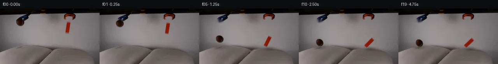

![首帧]()

Round 00
2026-11-04T19:03:37.966278+00:00像素候选变化代码 +248/−0inspection 更新
pixels ca9205eacb7b505d · code 00be646665daf796
查看本轮 generate.py 真实 diff
--- previous/generate.py +++ current/generate.py @@ -0,0 +1,248 @@ +#!/usr/bin/env python3 +"""Generate the 20-frame PixelWorld continuation from first_frame.png. + +The source pixels are the only visual source. The two held objects are isolated +with analytic masks, their vacated wall areas are reconstructed locally, and +the cutouts are animated with deterministic rigid transforms. Pillow response +and shadows are analytic pixel operations. +""" + +from pathlib import Path + +import cv2 +import numpy as np +from PIL import Image, ImageDraw, ImageFont + +from artifact_io import save + + +ROOT = Path(__file__).resolve().parent +H, W = 144, 256 + + +def soft_ellipse(cx, cy, rx, ry): + """A one-pixel feathered analytic ellipse.""" + yy, xx = np.mgrid[:H, :W].astype(np.float32) + radius = np.sqrt(((xx - cx) / rx) ** 2 + ((yy - cy) / ry) ** 2) + return np.clip((1.075 - radius) / 0.15, 0.0, 1.0).astype(np.float32) + + +def soft_polygon(points, supersample=4): + """Rasterize a polygon at high resolution, then area-downsample it.""" + canvas = np.zeros((H * supersample, W * supersample), np.uint8) + pts = np.rint(np.asarray(points) * supersample).astype(np.int32) + cv2.fillConvexPoly(canvas, pts, 255, lineType=cv2.LINE_AA) + return cv2.resize(canvas, (W, H), interpolation=cv2.INTER_AREA).astype(np.float32) / 255.0 + + +def rigid_warp(rgb, alpha, src_center, dst_center, angle_deg=0.0, sx=1.0, sy=1.0): + """Warp a premultiplied source cutout, returning RGB and alpha.""" + theta = np.deg2rad(angle_deg) + c, s = float(np.cos(theta)), float(np.sin(theta)) + # OpenCV's positive image-space angle turns a vertical object to the left. + matrix = np.array([[c * sx, s * sy], [-s * sx, c * sy]], np.float32) + src = np.asarray(src_center, np.float32) + dst = np.asarray(dst_center, np.float32) + affine = np.column_stack([matrix, dst - matrix @ src]).astype(np.float32) + warped_alpha = cv2.warpAffine( + alpha, affine, (W, H), flags=cv2.INTER_LINEAR, + borderMode=cv2.BORDER_CONSTANT, borderValue=0, + ) + premul = rgb.astype(np.float32) * alpha[..., None] + warped_rgb = cv2.warpAffine( + premul, affine, (W, H), flags=cv2.INTER_LINEAR, + borderMode=cv2.BORDER_CONSTANT, borderValue=(0, 0, 0), + ) + return warped_rgb, np.clip(warped_alpha, 0.0, 1.0) + + +def composite(dst, premul_rgb, alpha): + return dst * (1.0 - alpha[..., None]) + premul_rgb + + +def deform_pillows(base, ball_amp, block_amp): + """Pull pillow texture downward in two smooth, localized dimples.""" + yy, xx = np.mgrid[:H, :W].astype(np.float32) + displacement = np.zeros((H, W), np.float32) + for cx, surface, width, amplitude in ( + (51.0, 99.0, 18.0, ball_amp), + (174.0, 103.0, 20.0, block_amp), + ): + horizontal = np.exp(-0.5 * ((xx - cx) / width) ** 2) + activation = 1.0 / (1.0 + np.exp(-(yy - (surface - 9.0)) / 2.3)) + below_decay = np.exp(-np.maximum(yy - surface, 0.0) / 80.0) + displacement += amplitude * horizontal * activation * below_decay + map_x = xx + map_y = np.clip(yy - displacement, 0, H - 1).astype(np.float32) + return cv2.remap( + base, map_x, map_y, interpolation=cv2.INTER_LINEAR, + borderMode=cv2.BORDER_REFLECT_101, + ) + + +def add_contact_shadow(frame, cx, surface_y, distance, width, strength, skew=0.0): + """Multiply a diffuse pillow shadow whose softness follows object height.""" + yy, xx = np.mgrid[:H, :W].astype(np.float32) + softness = 1.0 + max(distance, 0.0) * 0.055 + rx = width * softness … diff truncated; 161 more lines …